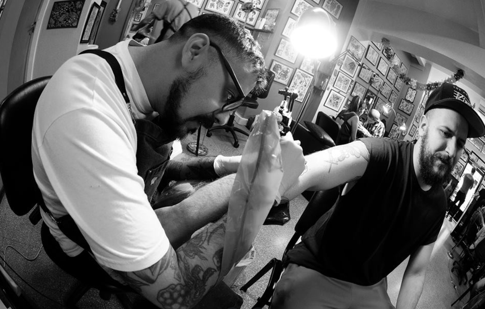
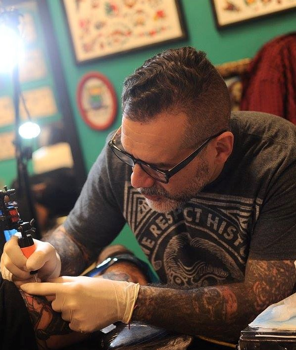
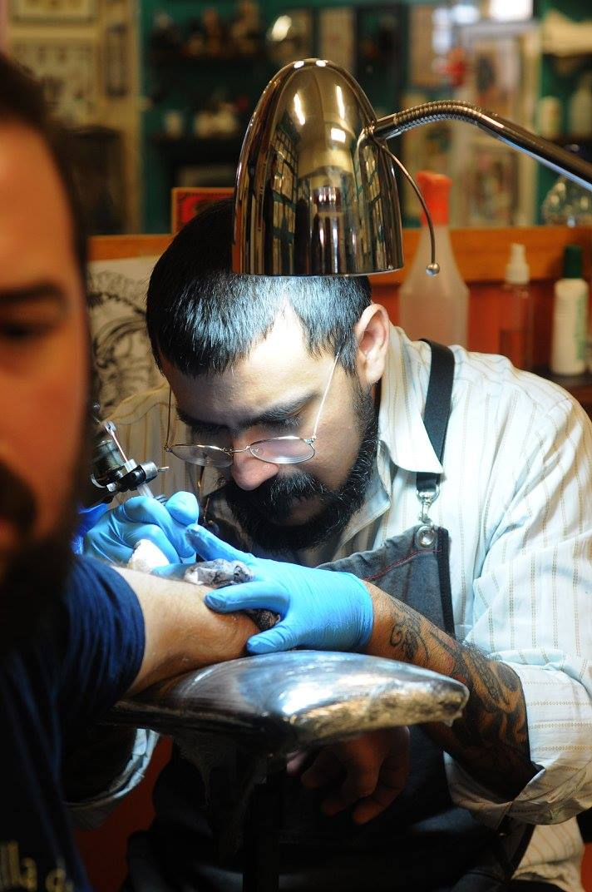
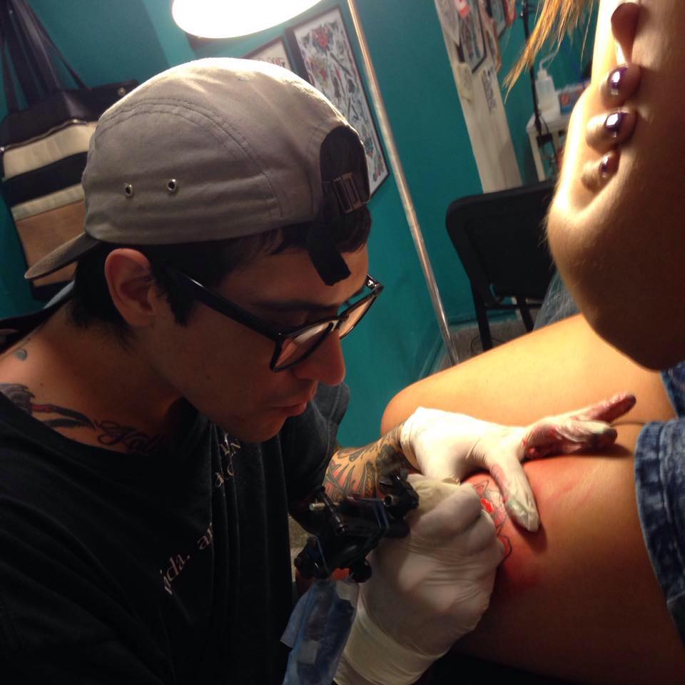
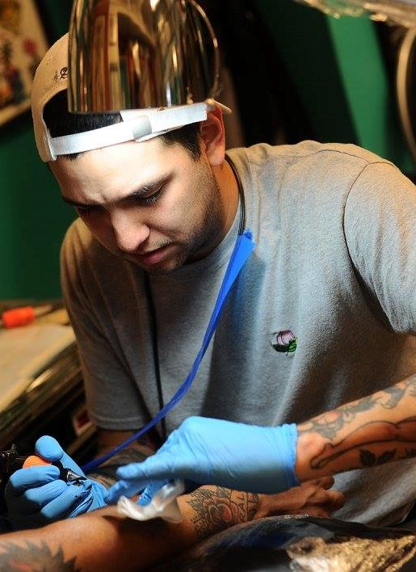
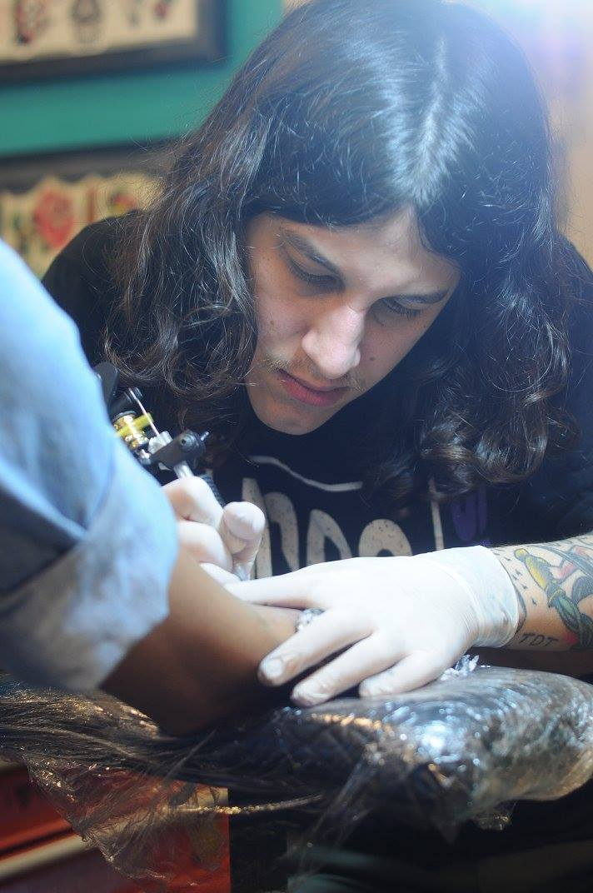

NUESTROS TATUADORES

Mariano Castiglioni
Mariano empezo a tatuar hace 30 años, y es el fundador del estudio.

Dominguez Dumois
El turco es un tatuador que emigro de Turquia hace 10 años.

Juan Manuel Piranha
Juan empezo siendo artista plastico, pero comenzo a tatuar hace 8 años.

Leandro Manzur
Leandro "el bebe" se especializa en el estilo de tatuaje tradicional americano.

Carlos Wake
Carlitos es un artista del graffiti, y sus tatuajes son inspirados en ese mundo.

Joaquin Costa
Joaco tatua en muchos estilos, fue el ultimo aprendiz de Mariano.